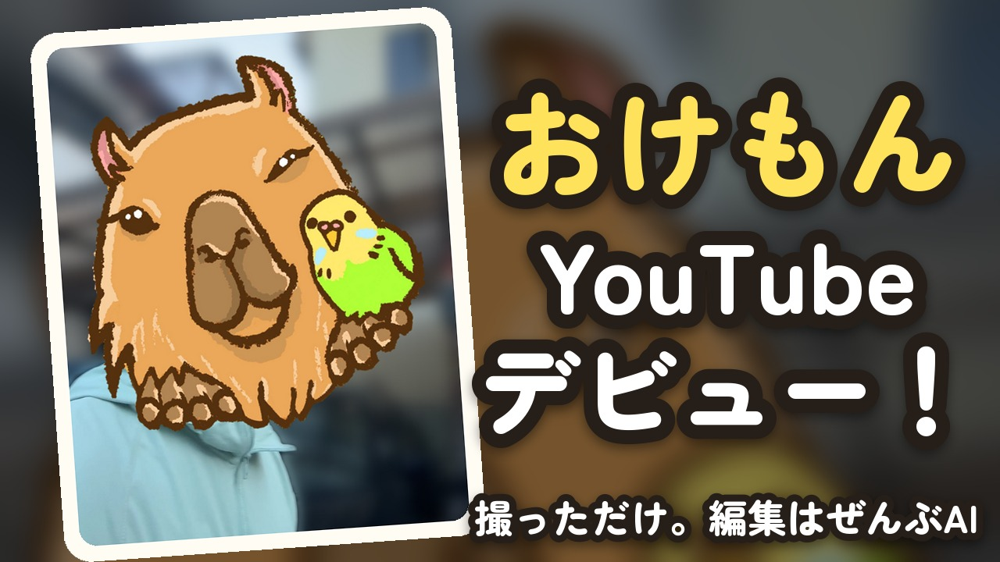
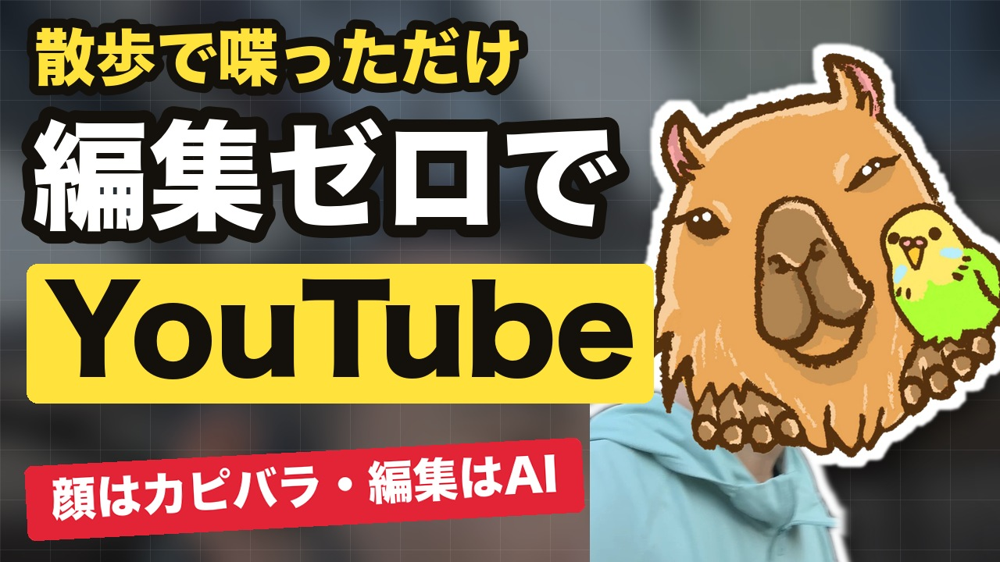

横長
① インコが喋る？ 喋らない？
ちがいは1つだけ。左は、インコが声でツッコみます（その間、絵が一瞬止まる）。右は、インコはふきだしだけ。
インコ掛け合い あり 8分51秒・このページだけに置いています
見る時に、気にしてほしい所
- インコが喋ると、おもしろくなる？ テンポが悪くなる？（0:13、3:10、5:30 あたりで喋ります）
- インコの声はどう？（いまは仮の声。パソコンの読み上げを高くしただけ）
- 左の札（いまのテーマ）と、黄色いキーワードは、読みやすい？ じゃま？
- カピバラの大きさ。オフ会で「カピバラがうるさくて話が入ってこない」という声をもらいました。次の1本で控えめにします。
最初に作った版
② 縦と横
最初は、撮ったままの縦長で仕上げていました。スマホだと画面いっぱい、パソコンだと左右が黒くなります。
縦の版 8分33秒・最初に作った版
③ サムネ
左が最初の版。右は、伸びている動画のサムネを7枚並べて、同じ型（特大の字・黄色の行・赤い帯・白ふちの切り抜き）で作り直した版。公開版には右を付けています。

最初の版

見本の型で作り直した版（公開版に使用）
3本のちがい
縦の版
- 画面
- 縦 1080×1920
- インコ
- ふきだしだけ
- 長さ
- 8分33秒
- 左の札
- 話題の名前（小さい）
- 鳥居の写真
- 額の字が読める
横長・なし（公開）
- 画面
- 横 1920×1080。真ん中におけもん、左に札、右にインコ
- インコ
- ふきだしだけ
- 長さ
- 8分33秒
- 左の札
- 言いたいこと（大きい）
- 鳥居の写真
- 額の字をぼかした
横長・あり
- 画面
- 横 1920×1080。公開版と同じ並び
- インコ
- 声でツッコむ（10回）
- 長さ
- 8分51秒
- 左の札
- 言いたいこと（大きい）
- 鳥居の写真
- 額の字が読める